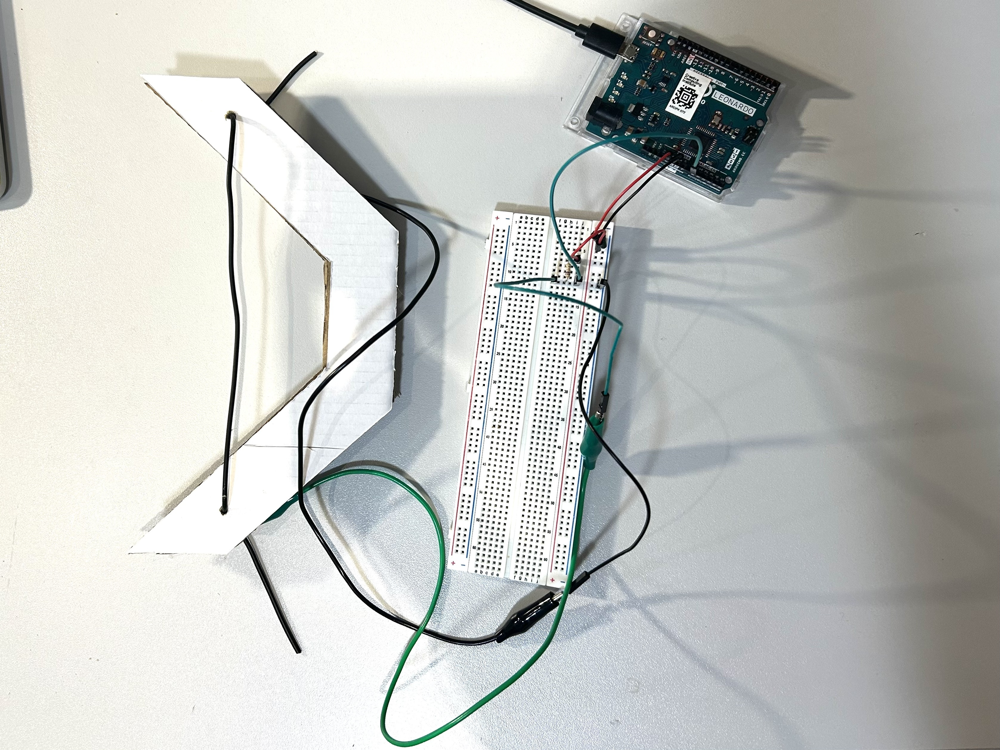

UnCupid is a Valentine's Day game for singles, where the players are playing the cupid-angel role, but with a twist. Instead of bringing the people together, the aim is to break them up, using a bow and arrow. The theme of the game is inspired by the people complaining about spending Valentine's day alone and envying the couples who don't (not a personal issue). I designed the console to function like a bow, allowing the players the sensation of streching and releasing a string. The same idea can be applied to slingshot games, where the players would use the console horizantally, instead of vertically. I used a strectch sensor for the console, which perfectly induces the feeling of using a real bow. Unlike a mouse or a joystick, a strech sensor, provides a more immersive and realistic experience of aiming and shooting. The game is a single-player experience, where the player is represented with a bow and arrow on the screen. Since I was limited to using only one sensor, I could only give the player the control over amount of strech and release. As a result, bow points to a fixed position. Since I wasn't able to make the bow rotatable, I made the targets mobile, moving in a looping motion from side to side. The game consists of four levels, with increasing difficulty in each stage. As the player progresses more targets appear along with obstacles that are preventing them getting shot. Targets are represented with farm animals with hearth shaped particles emerging from their heads The obstacles are depicted with roses, reinforcing the Valentine's Day theme. Due to the bow's lack of rotation and orientation control, the game functions as a 2D game, although the environment is designed in 3D.
- Arduino Leonardo - Conductive rubber cord stretch sensor - 1 x 10kΩ resistor - 2 x crocodile clips - 6 x male to male jumper wires - Breadboard - Upcycled cardboard from parcel box
II decided that I wanted to create a slingshot game using a literal slingshot as a console, so I started to research what type of sensors I could use for this.
I was thinking about the game concept, and since the project was due Valentine's Day, I decided that the theme can be related to it. This made me realise that the player as a cupid, should use a bow and arrow instead of a slingshot, and the mechanics would still work the same, for such a game.
I needed to implement the game mechanics without the console first. So I developed a game that was playable via mouse control.
This was my first time using a strech sensor so I learned how to create a circuit with a strech sensor and write a code to enable serial reading from it.
I have made a blank sketch and followed the tutorial in panopto to allow serial reading within Unity. However, this gave a timout error and through classmates, I learned that I needed to do something called multithreading. I used chatGPT to write the code for it.
I replaced mouse control with the serial data from strech sensor.
So far, I used very basic assets and UI elements, prioritising creating to a game that was working. Then I started spending time on the visual and audio elements of the game. I used free assets that I found from various resources online.
I wanted to add levels to my game, however, in this process the serial reading strated to give an error. I spent a lot of time debugging this issue.
I created a bow from cardboards that were upcycled from the parcel boxes I had been collecting. I inserted the strech sensors like a string of the bow, via holes. The connection of the sensor to arduino is provided by crocodile clips
The final touches on the game visuals, audio and mechanics are made and final debugging were done.
Since I wasn't able to publish the console controlled version of the game for the web, I published the mouse contolled version. I built the console controlled version as an app on my desktop.
I asked friends and family to play the game and observed their reactions to further develope the game.